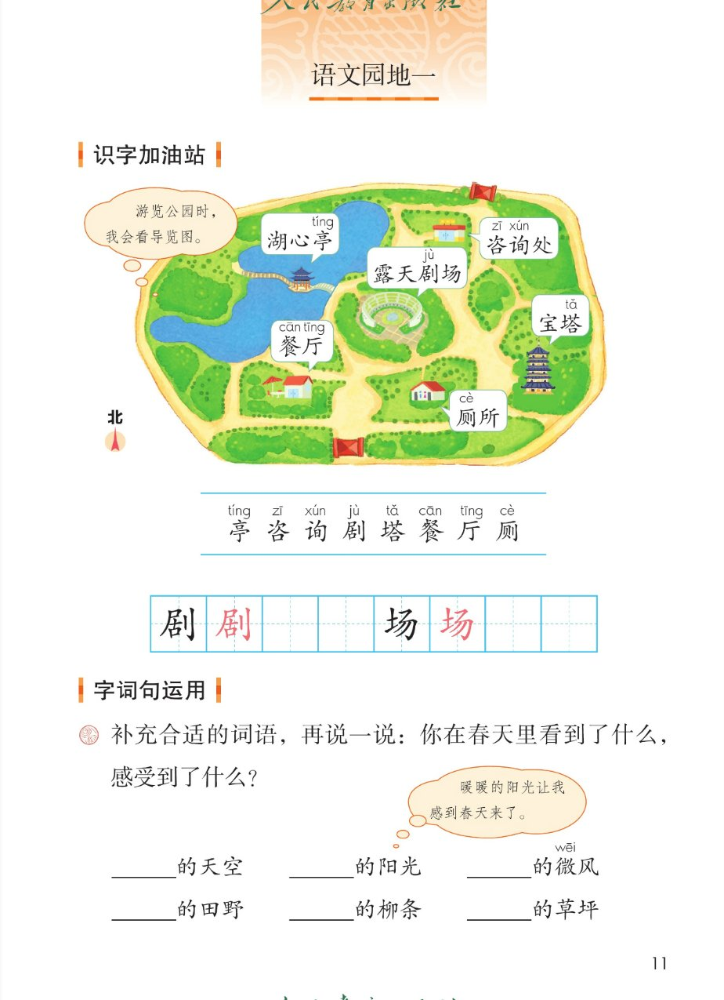
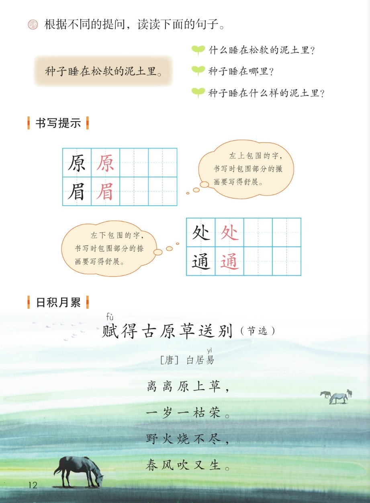
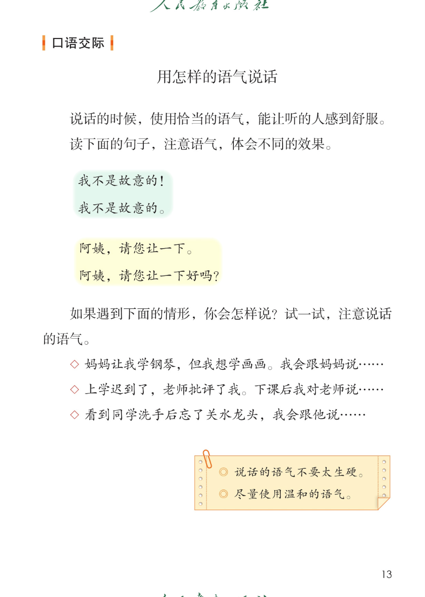
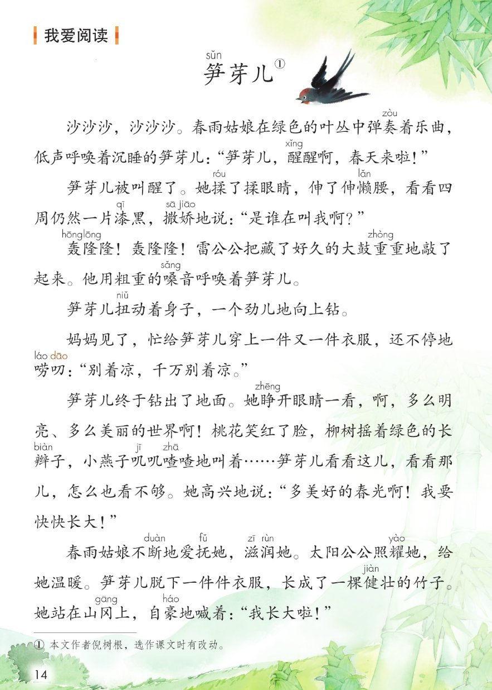

×
🔊 手机听不到声音怎么办？
① 先把手机
媒体音量调大 ，确认没开静音、没连蓝牙耳机；在微信里打开的，点右上角「⋯ → 用浏览器打开」。
② 还是没声音？到应用商店免费下载
Microsoft Edge 浏览器 （它自带朗读发声），用它打开本页面就能出声。
③ 换了 Edge 仍然没声音，说明这部手机的
硬件/系统不支持 网页朗读（多为老旧机型）；近几年买的新手机一般都能正常播放。
→ 打开声音自检
统编版 · 二年级下册 · 第一单元
第一单元 · 春天里的发现
单元综合课件：语文园地一 · 口语交际 · 我爱阅读
处所词 6 个
会认 8 字
会写 2 字
古诗 1 首
闯关 8 题
这个单元学了什么： 四篇课文都在讲春天——诗里的柳与纸鸢、出门找春天、一路鲜花、亲手植树。
语文园地一就是把本单元学到的识字、用词、写字、朗读、说话 收一收、用一用。点一下任一卡片或句子，就能听。
课本第 11 页
点词听读音，点解释听意思
小女孩说（课本原话）： 游览公园时，我会看导览图。图上还有什么： 左边有一个「北」字和指北针，看导览图先找方向。
湖心亭tíng
湖中心的小亭子，能看湖水
「亭」tíng
咨zī 询xún 处
有不懂的事，在这里问一问
「咨询」zī xún
露天剧jù 场
没有屋顶的看台，围成一圈
「剧」jù
餐cān 厅tīng
公园里吃饭的地方
「餐厅」cān tīng
怎么认： 导览图上 6 个白色标签，把 8 个要认的字都藏进去了。看标签上的拼音读一读，再在图上找到那个地方。
课本第 11 页两条蓝线之间那一行，按课本顺序
田字格里是「剧」「场」，后一格是描红
会写提示（供参考，以教材为准）： 「剧」左「居」右立刀旁；「场」左提土旁。两个字都是左右结构，左右要写匀称。
课本第 11 页
题目（课本原文）： 补充合适的词语，再说一说：你在春天里看到了什么，感受到了什么？
的微wēi 风
示例：温暖的 微风
「微」wēi · 🌈 答案不唯一
课本泡泡（原话）： 暖暖的阳光让我感到春天来了。
课本第 12 页
同一个句子，重音不一样，回答的问题就不一样
题目（课本原文）： 根据不同的提问，读读下面的句子。
要读的句子（课本米黄色框）
种子睡在松软的泥土里。
💡 三个小苗问题问的不是一回事，所以这句话要读得不一样：把要回答的那个词读得重一点。
问 1
什么睡在松软的泥土里？
答「种子 」→ 重读种子
问 2
种子睡在哪里？
答「松软的泥土里 」→ 重读泥土里
问 3
种子睡在什么样的泥土里？
答「松软的 」→ 重读松软的
读法小窍门： 人家问什么，就把回答的那个词读重一点 。三个问题、三种读法，同一句话就能读出三个意思。
课本第 12 页
课本两个气泡（逐字照录）： 「左上包围的字，书写时包围部分的撇画要写得舒展。」
左上包围 · 撇要舒展
包围部分（撇） 里面部分
课本气泡： 左上包围的字，书写时包围部分的撇画要写得舒展。要点（供参考）： 「原」的厂字头、「眉」的尸字头，那一撇要往外伸得开，给里面留地方。
左下包围 · 捺要舒展
右上部分 包围部分（捺）
课本气泡： 左下包围的字，书写时包围部分的捺画要写得舒展。要点（供参考）： 「处」的夂、「通」的走之底，最后一捺要平平稳稳地托住上面。
写字口诀： 先看是左上包 还是左下包 ，再动笔；左上包的撇伸得开，左下包的捺托得稳。
课本第 12 页
点一行读一行
赋fù 得古原草送别（节选）
［唐］白居易yì
离lí 离lí 原yuán 上shàng 草cǎo ，
一yī 岁suì 一yī 枯kū 荣róng 。
野yě 火huǒ 烧shāo 不bù 尽jìn ，
春chūn 风fēng 吹chuī 又yòu 生shēng 。
诗的意思： 原野上的草长得又密又旺，每年枯一回、又长一回。野火烧不尽它们，春风一吹，就又长出来了。
📌 课本只给「赋 fù 」「易 yì 」两个字注了音；诗句上的逐字注音是课件为跟读加的辅助，供参考，以教材为准。
两个要读准的字（课本注音）
赋 fù，「赋得」是古人按指定题目作诗的说法。易 yì，白居易的名字，读第四声。
白居易是谁
唐代诗人，写诗力求让普通人听得懂。
这四句是长诗的前半，写草烧不尽、吹又生 。
🎯 背诵闯关（三步）
🔊 连起来读一遍
第一步： 跟读，一句一句跟着读。第二步： 看提示背，只看每句头两个字。第三步： 闭眼背，背完再对照。
课本第 13 页
说话的时候，使用恰当的语气，能让听的人感到舒服。
读下面的句子，注意语气，体会不同的效果。
点句子听两种语气
绿框 · 感叹号 vs 句号
我不是故意的！
我不是故意的。
💡 同一个意思：感叹号声音冲，像在顶嘴；句号平平地说，让人舒服。
黄框 · 直接要求 vs 商量着问
阿姨，请您让一下。
阿姨，请您让一下好吗？
💡 两句都有「请」；第二句多了「好吗」，是商量，更温和。
课本第 13 页
题目（课本原文）： 如果遇到下面的情形，你会怎样说？试一试，注意说话的语气。
◇ 情形一（课本原话）
◇ 妈妈让我学钢琴，但我想学画画。我会跟妈妈说……
示例（🌈 答案不唯一）： 妈妈，我知道您是为我好。我更想先试试画画，可以让我学一个学期再决定吗？
◇ 情形二（课本原话）
◇ 上学迟到了，老师批评了我。下课后我对老师说……
示例（🌈 答案不唯一）： 老师，今天迟到是我没安排好时间，对不起。明天我一定早一点出门。
◇ 情形三（课本原话）
◇ 看到同学洗手后忘了关水龙头，我会跟他说……
示例（🌈 答案不唯一）： 同学，水龙头还在流水呢，我们一起把它关上吧，别浪费水。
课本便签（逐字照录）： ◎ 说话的语气不要太生硬。
先想好，再开口
1
先说清楚
把事情、自己的想法说明白，不绕弯。
「妈妈，我想跟您说说学画画的事。」
2
语气温和
用「请」「可以吗」，别用冲的感叹号。
「可以让我试一个学期吗？」
3
给对方留余地
商量着说，也认真听对方怎么答。
「您觉得呢？我听您的想法。」
💬 说话的人
把事情说清楚，不急不抢。
尽量用温和、商量的语气。
多用「请」「可以吗」「谢谢」。
👂 听的人
看着对方，把话听完。
有不同想法，等说完再讲。
听懂了点点头，或说「我明白了」。
把事情说清楚了 ★ ★ ★
语气不生硬，听着舒服 ★ ★ ★
用了「请」「可以吗」这类商量话 ★ ★ ★
认真听了对方的回答 ★ ★ ★
👆 说完给自己打个星：三颗星是很棒，两颗星是还要加油。
笋sǔn 芽儿》①
课本第 14 页
点一段读一段，注音按课本随文照录
笋芽儿能钻出地面、长成竹子，谁帮了它？
💡 一路都有人帮： 春雨姑娘把她叫醒 → 雷公公敲鼓催她 → 妈妈一件件给她穿衣服 → 春雨爱抚滋润、太阳给她温暖。
也别忘了它自己： 「扭动着身子，一个劲儿地向上钻」——别人帮忙，还得自己肯使劲。
词语积累（取自课文）
弹奏乐曲 ——春雨落在叶丛上的声音撒娇 ——像小孩子那样软软地说话唠叨 ——一遍又一遍地叮嘱叽叽喳喳 ——小燕子的叫声
拟声词与叠词
沙沙沙、轰隆隆、叽叽喳喳
揉了揉、伸了伸、看看这儿看看那儿
一件又一件、一件件
这样写，故事读起来就有声音了。
朗读小提示： 春雨的话轻轻的，雷公公的鼓重重的，撒娇的话软软的，最后「我长大啦！」读得自豪 一点。
点选项就判对错，答完自动算分
已经答 0 题，答对 0 题。
点图放大

第 11 页 · 识字加油站 · 字词句运用

第 12 页 · 提问 · 书写提示 · 日积月累

第 13 页 · 口语交际 用怎样的语气说话

第 14 页 · 我爱阅读 笋芽儿